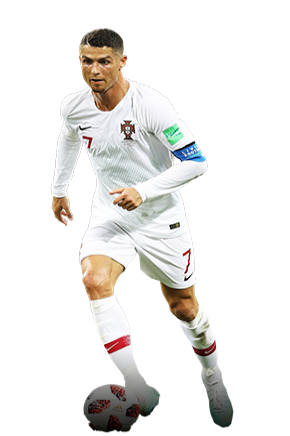

Ya conocemos los nombres de los tres últimos contendientes por el Premio The Best al Jugador de la FIFA. Tras las votaciones, repartidas uniformemente entre aficionados, periodistas, seleccionadores nacionales, y capitanes de las selecciones nacionales, la lista previa de diez aspirantes que seleccionó un jurado de FIFA Legends ha quedado reducida a solo tres contendientes. Uno de ellos subirá al estrado el 24 de septiembre para recibir el prestigioso premio. En Londres sabremos qué jugador lo conseguirá.
|  |